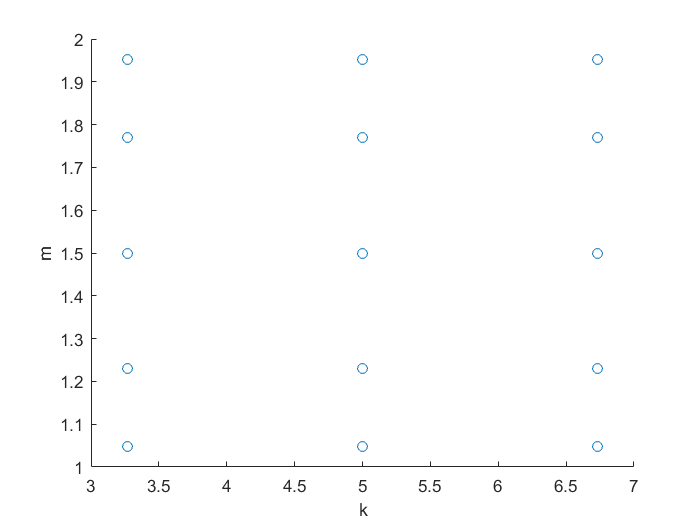

Get integration points and integration weights with quadrature rule
This script generates integration points and integration weights for two parameters K and M (to prepare mean calculation for the position of the mass in the spring example with direct integration)
Contents
Define parameter 'k'
%Define the distribution and corresponding standard distribution, % the corresponding polynomial system, and the syschar character assigned % to the standard distribution % Define distribution dist_k=NormalDistribution(5,1); % Get the corresponding base distribution %(standardised distribution of the germ xi_1) dist_xi_1=dist_k.get_base_dist; display(dist_xi_1); % Get corresponding polynomial system is_normalised=false; polys_xi_1=dist_xi_1.default_polysys(is_normalised); display(polys_xi_1) % Get the syscharacter corresponding to the polynomial system syschar_xi_1=gpc_registry('find', polys_xi_1); display(syschar_xi_1);
dist_xi_1 = N(0, 1) <a href="matlab:disp(char([32,32,60,97,32,104,114,101,102,61,34,109,97,116,108,97,98,58,104,101,108,112,80,111,112,117,112,32,78,111,114,109,97,108,68,105,115,116,114,105,98,117,116,105,111,110,34,32,115,116,121,108,101,61,34,102,111,110,116,45,119,101,105,103,104,116,58,98,111,108,100,34,62,78,111,114,109,97,108,68,105,115,116,114,105,98,117,116,105,111,110,60,47,97,62,32,119,105,116,104,32,112,114,111,112,101,114,116,105,101,115,58,10,10,32,32,32,32,32,32,32,109,117,58,32,48,10,32,32,32,32,115,105,103,109,97,58,32,49,10,10]))">(show)</a> polys_xi_1 = <a href="matlab:helpPopup HermitePolynomials" style="font-weight:bold">HermitePolynomials</a> with no properties. syschar_xi_1 = H
Get 1D integration rule for 'k'
% Get 3 point integration rule [xi_1_i,w1_i]=polysys_int_rule(syschar_xi_1, 3) % Map to the parameter values 'k' k_1d_i=dist_k.base2dist(xi_1_i)
xi_1_i =
-1.7321 0 1.7321
w1_i =
0.1667
0.6667
0.1667
k_1d_i =
3.2679 5.0000 6.7321
Define parameter 'm'
Define the distribution and corresponding standard distribution, the corresponding polynomial system, and the syschar character assigned to the standard distribution
% Define distribution dist_m=UniformDistribution(1,2); % Get the corresponding base distribution %(standardised distribution of the germ xi_2) dist_xi_2=dist_m.get_base_dist; display(dist_xi_2); % Get corresponding polynomial system is_normalised=false; polys_xi_2=dist_xi_2.default_polysys(is_normalised); display(polys_xi_2); % Get the syscharacter corresponding to the polynomial system syschar_xi_2=gpc_registry('find', polys_xi_2); display(syschar_xi_2);
dist_xi_2 = U(-1, 1) <a href="matlab:disp(char([32,32,60,97,32,104,114,101,102,61,34,109,97,116,108,97,98,58,104,101,108,112,80,111,112,117,112,32,85,110,105,102,111,114,109,68,105,115,116,114,105,98,117,116,105,111,110,34,32,115,116,121,108,101,61,34,102,111,110,116,45,119,101,105,103,104,116,58,98,111,108,100,34,62,85,110,105,102,111,114,109,68,105,115,116,114,105,98,117,116,105,111,110,60,47,97,62,32,119,105,116,104,32,112,114,111,112,101,114,116,105,101,115,58,10,10,32,32,32,32,97,58,32,45,49,10,32,32,32,32,98,58,32,49,10,10]))">(show)</a> polys_xi_2 = <a href="matlab:helpPopup LegendrePolynomials" style="font-weight:bold">LegendrePolynomials</a> with no properties. syschar_xi_2 = P
Get 1D integration rule for 'm'
% Get 5 point integration rule [xi_2_j,w2_j]=polysys_int_rule(syschar_xi_2, 5) % Map to the parameter values 'k' m_1d_j=dist_m.base2dist(xi_2_j)
xi_2_j =
-0.9062 -0.5385 0 0.5385 0.9062
w2_j =
0.1185
0.2393
0.2844
0.2393
0.1185
m_1d_j =
1.0469 1.2308 1.5000 1.7692 1.9531
Get the integration points for m and k with the tensor product rule
% Take the full tensor grid [x, w] = tensor_mesh( { k_1d_i, m_1d_j }, {w1_i,w2_j} ); k_i = x(1,:); m_i = x(2,:); % Plot the integration points scatter(k_i, m_i); xlabel('k'); ylabel('m');